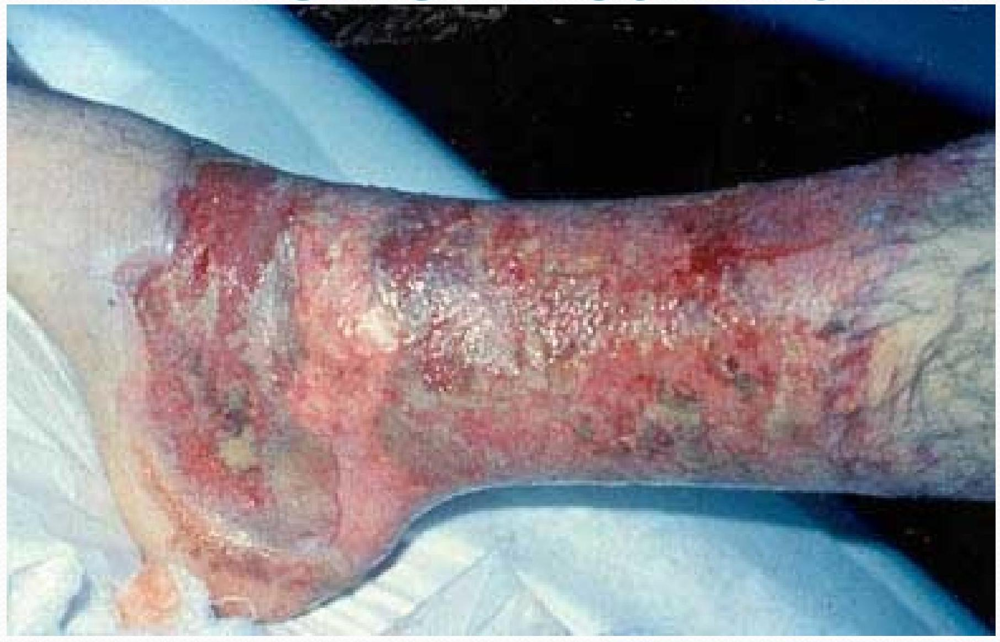
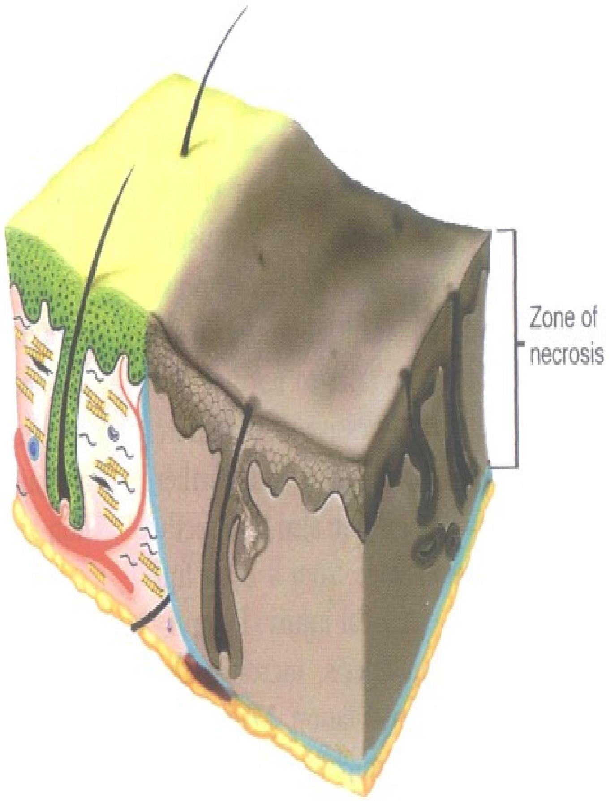
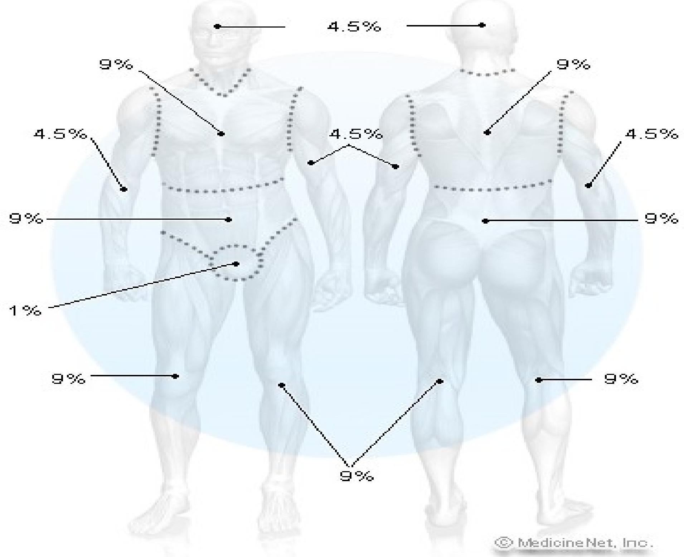

Burns
Wounds caused by exposure to:
- excessive heat
- Chemicals
- fire/steam
- radiation
- electricity
Types of Burns
Thermal
exposure to flame or a hot object
Chemical
exposure to acid, alkali or organic substances
Electrical
result from the conversion of electrical energy into heat. Extent of injury depends on the type of current, the pathway of flow, local tissue resistance, and duration of contact Radiation
result from radiant energy being transferred to the body resulting in production of cellular toxins
Chemical Burn
Burn Wound Assessment
Classified according to depth of injury and extent of body surface area involved Burn wounds differentiated depending on the level of dermis and subcutaneous tissue involved
- superficial (first-degree)
- deep (second-degree)
- full thickness (third and fourth degree)
Superficial Dermal Burn
Characteristics
- Necrosis confined to upper third of dermis
- Zone of necrosis lifted off viable wound by edema
- Small zone of injury
Full Thickness (Third/Fourth Degree)
Destruction of all skin layers
Requires immediate hospitalization
Dry, waxy white, leathery, or hard skin, no pain Exposure to flames, electricity or chemicals can cause 3rd degree burns
Full Thickness Burn
Characteristic
No remaining viable dermis
Calculation of Burned Body Surface Area
Lund Browder Chart used for determining BSA
| Area | 0-1 Years | 1-4 Years | 5-9 Years | 10-14 Years | 15 Years | Adult | % 2nd | % 3rd | % TOTAL |
|---|---|---|---|---|---|---|---|---|---|
| Head | 19 | 17 | 13 | 11 | 9 | 7 | |||
| Neck | 2 | 2 | 2 | 2 | 2 | 2 | |||
| Ant. Trunk | 13 | 13 | 13 | 13 | 13 | 13 | |||
| Post. Trunk | 13 | 13 | 13 | 13 | 13 | 13 | |||
| R. Buttock | 2.5 | 2.5 | 2.5 | 2.5 | 2.5 | 2.5 | |||
| L. Buttock | 2.5 | 2.5 | 2.5 | 2.5 | 2.5 | 2.5 | |||
| Genitalia | 1 | 1 | 1 | 1 | 1 | 1 | |||
| R.U. Arm | 4 | 4 | 4 | 4 | 4 | 4 | |||
| L.U. Arm | 4 | 4 | 4 | 4 | 4 | 4 | |||
| R.L. Arm | 3 | 3 | 3 | 3 | 3 | 3 | |||
| L.L. Arm | 3 | 3 | 3 | 3 | 3 | 3 | |||
| R. Hand | 2.5 | 2.5 | 2.5 | 2.5 | 2.5 | 2.5 | |||
| L. Hand | 2.5 | 2.5 | 2.5 | 2.5 | 2.5 | 2.5 | |||
| R. Thigh | 5.5 | 6.5 | 8 | 8.5 | 9 | 9.5 | |||
| L. Thigh | 5.5 | 6.5 | 8 | 8.5 | 9 | 9.5 | |||
| R.L. Leg | 5 | 5 | 5.5 | 6 | 6.5 | 7 | |||
| L.L. Leg | 5 | 5 | 5.5 | 6 | 6.5 | 7 | |||
| R. Foot | 3.5 | 3.5 | 3.5 | 3.5 | 3.5 | 3.5 | |||
| L. Foot | 3.5 | 3.5 | 3.5 | 3.5 | 3.5 | 3.5 | |||
From the Medical University of South Carolina Children's Hospital Pediatric Burn Intake Form. (Charleston, SC)
RULES OF NINES
Head & Neck = 9%
Each upper extremity (Arms) = 9%
Each lower extremity (Legs) = 18%
Anterior trunk=18%
Posterior trunk = 18%
Genitalia ( perineum ) = 1%
Burn Percentage in adults: $\mathrm{R} \sim \mathrm{U} \in \mathrm{OF}$ Nines
FLUID SHIFT
Occurs after initial vasoconstriction, then dilation
Blood vessels dilate and leak fluid into the interstitial space
Known as third spacing or capillary leak syndrome
Causes decreased blood volume and blood pressure
Occurs within the first 12 hours after the burn and can continue to up to 36 hours
FLUID IMBALANCES
Occur as a result of fluid shift and cell damage
Hypovolemia
Metabolic acidosis
Hyperkalemia
Hyponatremia
Hemoconcentration (elevated blood osmolarity, hematocrit/hemoglobin) due to dehydration
FLUID REMOBILIZATION
Occurs after 24 hours
Capillary leak stops
See diuretic stage where edema fluid shifts from the interstitial spaces into the vascular space
Blood volume increases leading to increased renal blood flow and diuresis Body weight returns to normal See Hypokalemia
CURLING'S ULCER
Acute ulcerative gastro duodenal disease Occur within 24 hours after burn Due to reduced GI blood flow and mucosal damage
Treat clients with H2 blockers, mucoprotectants, and early enteral nutrition Watch for sudden drop in hemoglobin
PHASES OF BURN INJURIES
Emergent (24-48 hrs)
Acute
Rehabilitative
*ImmenamERGENT PHASE reduced blood flow (fluid and electrolyte shifts)
Goals:
- secure airway
- support circulation by fluid replacement
- keep the client comfortable with analgesics
- prevent infection through wound care
- maintain body temperature
- provide emotional support
Knowledge of EMERGENT PHASE surrounding the burn injury
Obtain client's pre-burn weight (dry weight) to calculate fluid rates
Calculations based on weight obtained after fluid replacement is started are not accurate because of water-induced weight gain Height is important in determining body surface area (BSA) which is used to calculate nutritional needs
Know client's health history because the physiologic stress seen with a burn can make a latent disease process develop symptoms
CLINICAL MANIFESTATIONS.IN THE
EMERGENT PHASE
Clients with major burn injuries and with inhalation injury are at risk for respiratory problems
Inhalation injuries are present in 20% to 50% of the clients admitted to burn centers
Assess the respiratory system by inspecting the mouth, nose, and pharynx
Burns of the lips, face, ears, neck, eyelids, eyebrows, and eyelashes are strong indicators that an inhalation injury may be present
Change in respiratory pattern may indicate a pulmonary injury. The client may: become progressively hoarse, develop a brassy cough, drool or have difficulty swallowing, produce expiratory sounds that include audible wheezes, crowing, and stridor Upper airway edema and inhalation injury are most common in the trachea and mainstem bronchi
Auscultate these areas for wheezes
If wheezes disappear, this indicates impending airway obstruction and demands immediate intubation
CLINICAL
Changes in renal function are related to decreased renal blood flow Urine is usually highly concentrated and has a high specific gravity
Urine output is decreased during the first 24 hours of the emergent phase Fluid resuscitation is provided at the rate needed to maintain adult urine output at 30 to $50-\mathrm{mL} / \mathrm{hr}$.
Measure BUN, creat and Na levels
CLINICAL
Sympathetic stimulation during the emergent phase causes reduced GI motility and paralytic ileus
Auscultate the abdomen to assess bowel sounds which may be reduced Monitor for $\mathrm{n} / \mathrm{v}$ and abdominal distention Clients with burns of 25% TBSA or who are intubated generally require a NG tube inserted to prevent aspiration and removal of gastric secretions
IV FLUID THERAPY
OInfusion of IV fluids is needed to maintain sufficient blood volume for normal CO
${ }^{\text {O}}$ Clients with burns involving 15% to 20% of the TBSA require IV fluid
OPurpose is to prevent shock by maintaining adequate circulating blood fluid volume
OSevere burn requires large fluid loads in a short time to maintain blood flow to vital organs
OFluid replacement formulas are calculated from the time of injury and not from the time of arrival at the hospital
ODiuretics should not be given to increase urine output. Change the amount and rate of fluid administration. Diuretics do not increase CO; they actually decrease circulating volume and CO by pulling fluid from the circulating blood volume to enhance diuresis
SKIN ASSESSMENT
Assess the skin to determine the size and depth of burn injury The size of the injury is first estimated in comparison to the total body surface area (TBSA). For example, a burn that involves 40% of the TBSA is a 40% burn Use the rule of nines for clients whose weights are in normal proportion to their heights
COMMON FLUIDS
Protenate or $5 \%$ albumın in isotonic saline ( $1 / 2$ given in first $8 \mathrm{hr} ; 1 / 2$ given in next 16 hr ) LR (Lactate Ringer) without dextrose ( $1 / 2$ given in first $8 \mathrm{hr} ; 1 / 2$ given in next 16 hr ) Crystalloid (hypertonic saline) adjust to maintain urine output at $30 \mathrm{~mL} / \mathrm{hr}$ Crystalloid only (lactated ringers)
NURSING DIAGNOSIS IN THE Decreased CO Deficient fluid volume r/t active fluid volume loss \ Ineffective Tissue perfusion Ineffective breathing pattern
ACUTE PHASE OF BURN
INIURY
- Lasts until wound closure is complete
- Care is directed toward continued assessment and maintenance of the cardiovascular and respiratory system
- Pneumonia is a concern which can result in respiratory failure requiring mechanical ventilation
- Infection (Topical antibiotics - Silvadene)
- Tetanus toxoid
- Weight daily without dressings or splints and compare to pre-burn weight
- A $2 \%$ loss of body weight indicates a mild deficit
- A 10% or greater weight loss requires modification of calorie intake
- Monitor for signs of infection
LAB VALUES
Na - hyponatremia or Hypernatrem
K - Hyperkalemia or Hypokalemia
WBC - 10,000-20,000
NURSING DIAGOSIS IN THE ACUTE PHASE
Impaired skin integrity Risk for infection Imbalanced nutrition Impaired physical mobility Disturbed body image
PLANNING AND IMPLEMENTATION Nonsurgical management: removal of exudates and necrotic tissue, cleaning the area, stimulating granulation and revascularization and applying dressings. Debridement may be needed
DRESSING THE BURN
WOUND
After burn wounds are cleaned and debrided, topical antibiotics are reapplied to prevent infection
Standard wound dressings are multiple layers of gauze applied over the topical agents on the burn wound
REHABILITATIVE PHASE OF BURN INJURY
Started at the time of admission
Technically begins with wound closure and ends when the client returns to the highest possible level of functioning
Provide psychosocial support Assess home environment, financial resources, medical equipment, prosthetic rehab
Health teaching should include symptoms of infection, drugs regimens, f/u appointments, comfort measures to reduce pruritus
Initially NPO
Begin oral fluids after bowel sounds return Do not give ice chips or free water lead to electrolyte imbalance High protein, high calorie
DEBRIDEMENT
Done with forceps and curved scissor or through hydrotherapy (application of water for treatment)
Only loose eschar removed Blisters are left alone to serve as a protector controversial
SKIN GRAFTS
Done during the acute phase Used for full-thickness and deep partialthickness wounds
POST CARE OF SKIN GRAFTS
Maintain dressing
Use aseptic technique
Graft should look pink if it has taken after 5 days
Skeletal traction may be used to prevent contractures
Elastic bandages may be applied for 6 mo to 1 year to prevent hypertrophic scarring